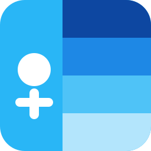
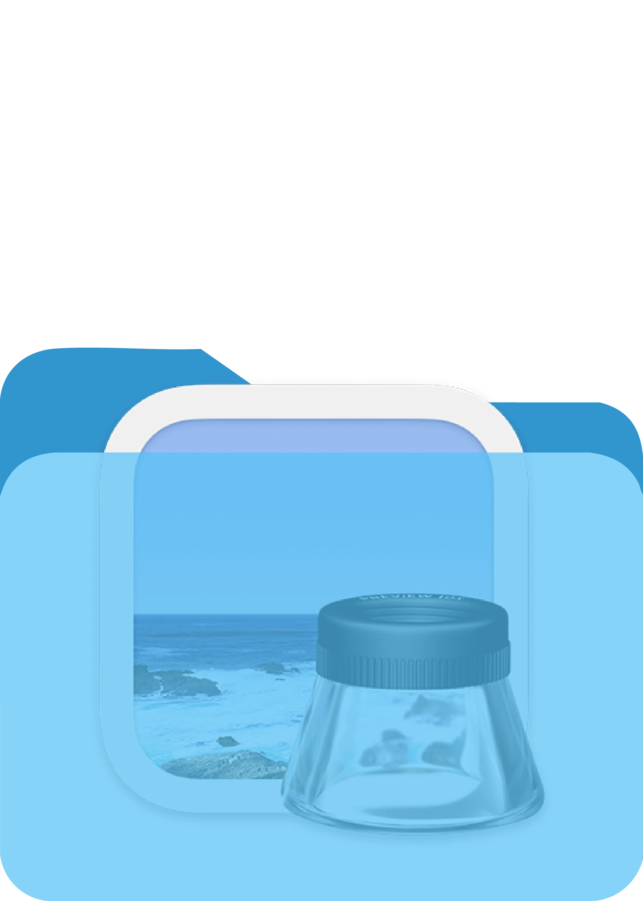

2026
PORTFOLIO
JEONG CHAN HEE
이 포트폴리오는 PC 환경에 최적화되어 있습니다.
정해진 틀 너머의
브랜드 경험을
그래픽으로 풀어내는
디자이너 정찬희입니다.
브랜드 아이덴티티를 바탕으로, 로고, 패키지, 편집물 등 다양한 매체를 다루며,
프로젝트 목적과 맥락을 깊이 이해하고 브랜드에 맞는 결과물을 만들어냅니다.
브랜드 경험 전반을 아우를 수 있는 더 입체적이고 확장성 있는 디자인을 만들어가고자 합니다.
CONTACT
chanhee.design@gmail.com
WORK & DESIGN EXPERIENCE
- (주)소통파이브 인턴십2025.06 - 2025.08
- 2025 한국디자인학회 봄 국제학술대회·대학생 디자인
학술발표대회 전시2025.06.07 국민대학교 조형관 - 카펫[CARPET]:통합 모빌리티 환경에서
반려동물 동반 이동의 제약 해소를 위한
서비스 모델 연구 논문 게재CARPET: A Study on Service Models to Alleviate Constraints of Companion Animal Mobility in Integrated Mobility Environments2025.05 - 학과 리브랜딩 진행대구가톨릭대학교 뉴미디어&게임디자인과(구 디지털디자인과)2025.02 - 2025.06
- 2025 졸업전시 준비 위원회 홍보팀장, 웹팀장대구가톨릭대학교 뉴미디어&게임디자인과(구 디지털디자인과)2025.03 - 2025.12
- 디지털디자인과 졸업생 인터뷰 기획 및 제작대구가톨릭대학교 디지털디자인과2024.05 - 2024.07
- 학과 웹페이지 배너 제작대구가톨릭대학교 디지털디자인과2024.05
- 디디 서포터즈(학과홍보동아리) 동아리장대구가톨릭대학교 디지털디자인과2024.04 - 2024.12
AWARDS
- 2025 대구가톨릭대학교 뉴미디어&게임디자인과 졸업전시회 See(th)-ROUTE 우수작현실도피자, 브랜드디자인
- 2024 대구가톨릭대학교 올해의 디디인 Nominees
- 2024 대구가톨릭대학교 DXDAWARD 우수상잡식, 인터랙션디자인 · 카펫, 브랜드디자인 · Blender, 3D 모델링 및 애니메이션 ·
케어풀, UI/UX디자인 · 대구미술관 전용 픽토그램, 인포그래픽디자인 - 2024 DMZ 게임 개발 공모전 우수상대구가톨릭대학교 중앙도서관 DMZ2024.06
- 2023 대구가톨릭대학교 DXDAWARD 우수상게임 웹페이지 리디자인, 인터랙션디자인 · 네버랜드 신드롬, 인포메이션디자인 ·
지구를 지켜라 챌린지, 영상제작
PROGRAM LICENSE
2012

ITQ 한글2010
SKILL

Typography
Web
Graphic
BX 01
BX 02
BX 03
Product 01
Product 02
Product 03
폴더를 더블클릭하면 작업을 볼 수 있어요